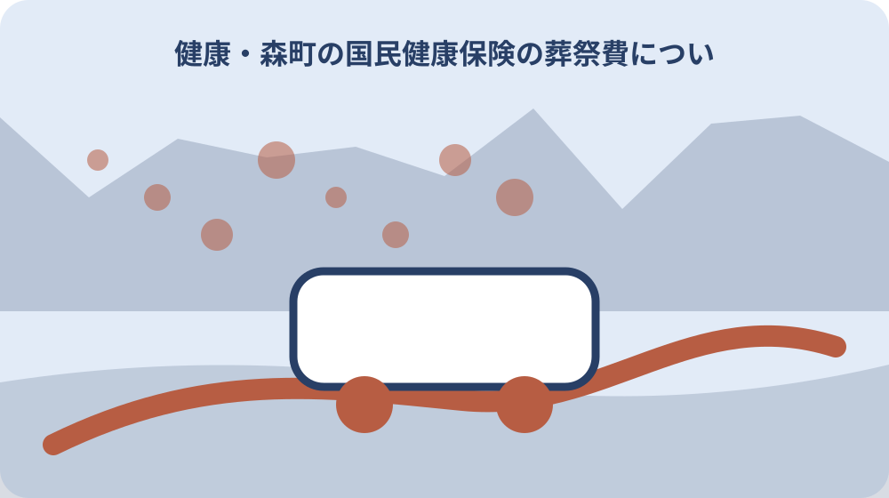

先に結論を確認する
この記事の答え：死亡時点の森町国保資格、葬祭を行った人、五万円、様式第一の二の葬祭費請求書、必要資料と口座条件の窓口回答、提出、受付、入金を別欄にします。相続人や世帯主という立場だけで請求者を決めません。
森町で最初に照合する条件：死亡時点で森町国保の資格があったかを確認し、後期高齢者医療や勤務先保険の死亡給付と同じ申請にしない。
結論は葬祭を行った人・請求書・受付結果を一件表へ分ける
森町国民健康保険の葬祭費は、亡くなった人の保険を確認しただけでは申請準備が終わりません。葬祭を行った人、葬祭費請求書、森町の受付回答、振込先として確認された口座を別欄にし、五万円の給付を一件ずつ追える表にします。
最初の欄には亡くなった人の氏名、死亡日、死亡時点の加入保険を書きます。次に葬祭を行った人の氏名と連絡先を置きます。相続人や世帯主という立場だけで申請者を決めず、誰を請求者として扱うか国保年金係へ確認します。
森町公式が直接示すのは、国保被保険者が死亡し葬祭を行ったときの給付額が五万円であること、葬祭費請求書が存在すること、担当が住民生活課であることです。必要な添付書類や振込先の名義条件は推測せず、問い合わせ結果を表へ追記します。
このページの完成物は、お悔やみ手続き全体の一覧ではありません。死亡届、火葬場予約、年金、相続、税を一つに混ぜず、森町国保の葬祭費だけを受付から入金確認まで引き継ぐ申請証拠票です。
一件表の先頭には、森町公式を確認した日と、国保年金係へ問い合わせた日を分けて書きます。公開ページの記載と個別案件への回答を同じ欄へ混ぜなければ、後から条件を見直す人も、五万円という一般案内と今回の支給判断を取り違えません。
死亡時点の加入保険を最初に固定する
葬祭費の欄を作る前に、死亡時点で森町国民健康保険の被保険者だったかを確認します。現在手元にある資格確認書だけで判断せず、死亡日と資格の始期・終期が重なるかを国保年金係へ尋ね、確認日と回答部署を残します。
後期高齢者医療、勤務先の健康保険、共済などにも死亡に関する別の給付がありますが、森町国保の葬祭費と同じ申請として扱いません。加入制度欄には制度名、保険者名、資格確認に使った資料、未確認事項を一行ずつ記録します。
森町のお悔やみ案内は国民健康保険加入者に葬祭費給付があると示し、国保の総合案内は被保険者が死亡し葬祭を行った場合と条件を示しています。二つの案内を照合し、死亡した事実だけで対象確定としないことが大切です。
資格が分からない段階では、五万円を受け取れる前提で家計へ計上しません。亡くなった人の氏名、住所、生年月日、死亡日、分かる範囲の保険情報を用意し、窓口で確認する質問を一文にしておきます。
資格確認で町へ伝えた情報も記録します。亡くなった人の住所が町外へ移っていた、勤務先保険との切替時期が近いなど判断が難しい場合は、保険者名と確認先を追加し、森町国保だけを見て対象・対象外を決めないようにします。
葬祭を行った人と親族関係を別欄にする
厚生労働省の条例参考例は、葬祭費を葬祭を行う者へ支給する形を示しています。家族の代表者、喪主、費用を支払った人、戸籍上の相続人が常に同一とは限らないため、役割を一つの肩書へまとめないでください。
申請証拠票には、葬祭を行った人、町へ問い合わせる人、請求書へ記入する人、口座名義人を分けて書きます。異なる人になる場合は、誰のどの資料が必要かを森町へ確認し、回答を受けるまでは請求者欄を確定扱いにしません。
葬祭を行ったことを何で確認するかは、現行の森町公式ページだけでは具体的に示されていません。会葬礼状、領収書、火葬関係書類などを勝手に必須と決めず、手元にある資料名を伝えたうえで必要な証明を尋ねます。
親族でない人が葬祭を行った場合や複数人が費用を分担した場合も、一般例から結論を出しません。葬祭の実施者と費用負担者の事実を分け、国保年金係が確認した請求者と追加資料を日付付きで残します。
役割欄には『家族代表』のような曖昧な語だけを書かず、葬祭を実際に取り仕切った人、請求書に記載する人、窓口へ行く人を具体的に分けます。町の確認前に署名や口座を決めなければ、書き直しや家族間の誤解を減らせます。

五万円の給付と葬儀費用を混同しない
森町国保の案内にある葬祭費は五万円です。これは実際に支払った葬儀費用の全額を精算するという説明ではありません。葬儀社への支払額、香典、寺院等への支出と葬祭費給付を同じ収支欄へ入れず、制度給付として独立させます。
表には公式ページで確認した金額、確認日、申請日、受付番号または受付確認、支給決定の連絡、入金日を並べます。申請した時点で受給済みにせず、受付、審査、決定、入金という状態を別々に更新します。
国民健康保険法は、市町村が条例により死亡に関する葬祭費支給等を行うと定め、特別の理由による不支給等の余地も置いています。一般的な法文だけで個別支給を断定せず、森町の審査結果を最終欄に残します。
葬祭費を葬儀代の値引きや相続財産の分配と同じ問題にしないことも重要です。家族内での費用精算が必要なら別の家計表を作り、この申請証拠票には公的給付の事実だけを記録します。
入金を確認した後も、五万円が誰の費用負担を補うかをこのページで決めません。葬儀費用の分担や相続関係の精算は、関係者と必要な専門家へ別に確認し、葬祭費の公的な受付記録へ家族内の結論を書き足さないようにします。
様式第一の二の葬祭費請求書を確認する
森町の押印・署名を不要とした申請書等一覧には、森町国民健康保険給付規則の様式第一の二として葬祭費請求書が掲載されています。申請書名、様式番号、所管部署を表の先頭に転記し、別制度の申請書との取り違えを防ぎます。
一覧に名前があることと、最新の記入用紙をそのPDFから取得できることは同じではありません。国保年金係へ現行様式の入手方法を確認し、窓口配布、郵送、ダウンロードのどれを使うか、取得日と版を記録します。
押印・署名不要一覧に収録されていても、本人確認や葬祭実施の確認資料まで不要だとは読み替えません。押印欄の扱い、記名方法、訂正方法、代理提出の可否は現行請求書と窓口回答で確認します。
書き損じに備えて原本を複数コピーするより、未記入の現行様式を保存し、提出した版の控えを別に残します。個人情報や口座情報を含む控えは家族共有フォルダへ無制限に置かず、保管者と削除時期を決めます。
現行様式を受け取ったら、様式番号だけでなく用紙の表題、発行元、記入欄、裏面案内、更新表示を確認します。古い控えを再利用する場合は最新版と欄が同じかを照合し、同じ様式第一の二という番号だけで内容も同じだと決めません。
国保年金係へ質問を一度で伝える
森町の国民健康保険案内は、住民生活課国保年金係と電話番号〇五三八―八五―六三一三を掲載しています。電話では、死亡日、死亡時点の加入保険、葬祭を行った人、手元の資料を順に伝え、葬祭費請求書の現行版を確認します。
質問は、請求者として扱う人、必要な添付資料、振込口座の名義条件、提出方法、申請期限、審査後の通知方法に分けます。一度に結論だけを聞くより、質問ごとに回答と未回答を記録した方が家族へ正確に引き継げます。
担当者の個人名を必要以上に共有せず、回答部署、確認日時、回答の要点を残します。後日条件が変わった場合は古い回答を消さず、新しい確認日と差分を追記して、どの情報で提出したか分かるようにします。
窓口へ行く人と電話で確認した人が異なる場合は、申請証拠票の質問欄を共有します。窓口で追加資料を求められたら、その場で推測して代用品を提出せず、資料名と再提出方法を正確に書き取ります。
質問票は電話前に家族へ共有し、回答が必要な項目へ番号を振ります。通話後に記憶でまとめ直すより、質問番号ごとに回答、追加確認先、必要資料を書けば、窓口担当が変わった場合でも何を確認済みにしたか説明しやすくなります。
死亡届と葬祭費請求を別工程にする
森町のお悔やみ案内は、死亡した事実を知った日から七日以内の死亡届を案内しています。死亡届の期限と葬祭費請求の受付条件は同じではないため、死亡届を出しただけで葬祭費請求も完了したと記録しないでください。
工程表は、死亡届、火葬場関係、国保資格確認、葬祭実施者確認、請求書取得、添付資料確認、提出、受付、入金確認に分けます。葬祭費欄には国保年金係の工程だけを置き、住民係の受付と混同しないよう部署名を添えます。
死亡届や火葬場予約を担った家族が、葬祭費も自動的に請求できるとは限りません。各工程の担当者を決め、国保年金係が確認した請求者情報を共有した後に請求書を完成させます。
お悔やみ手続き全体を見渡す既存ページは、急ぐ順番を知る入口として使えます。このページではそこから葬祭費だけを切り出し、受付結果と入金まで閉じることで、同じ問い合わせの繰り返しを減らします。
死亡届の控えや火葬関係書類を葬祭費請求へ使えるかは、国保年金係の回答で確定します。別工程で受け取った書類を自動的な添付資料とは考えず、原本提示だけか、写しを提出するか、返却されるかまで確認して記録します。
添付資料と口座条件は未確認欄から始める
森町の現行公開案内から、国保葬祭費の添付資料一式や口座名義条件を断定できません。そのため申請証拠票では、必要書類欄を空白ではなく未確認と表示し、国保年金係へ確認した日まで確認済みの記録を付けない設計にします。
手元の領収書、会葬礼状、火葬関係書類、口座情報などは、必要かもしれない資料として一覧にできます。ただし一般的な自治体例を森町の必須書類へ置き換えず、必要、不要、代替可、原本提示、写し提出の区分を回答後に記入します。
振込口座についても、請求者本人名義が必要か、別名義が可能か、通帳のどの箇所を確認するかを森町へ尋ねます。銀行名、支店、口座種別、番号、名義を共有する範囲を限定し、メールや家族チャットへ画像を放置しません。
追加資料が必要になったときは、誰が取得するか、原本を誰が持つか、提出後に返却されるかを記録します。資料の不足を家族の責任問題にせず、未確認を見える化して次の行動へ変えます。
未確認欄には単に空欄を残すのではなく、確認する質問、問い合わせ先、担当する家族、予定日を書きます。資料が見つからない場合は代替資料の可否を尋ね、一般的な自治体の持ち物一覧を森町の運用として代用しないことを徹底します。
受付・決定・入金を三つの状態で追う
請求書を役場へ渡した日は申請日であり、支給決定日や入金日ではありません。申請証拠票には提出方法、受付部署、受付確認、追加資料の有無、決定通知、入金確認を別の列で作り、状態を飛ばさず更新します。
郵送できるかどうかは公開情報から決めず、窓口へ確認します。郵送が認められた場合は発送日、送付先、追跡番号、到着確認を残し、個人情報を含むため普通の家族メモと同じ封筒管理にしません。
支給が確認できないときは、申請日と受付内容を示して国保年金係へ照会します。家族間で『役場に出したはず』という記憶だけを共有せず、控えの保管場所と次回確認日を一行で示します。
入金後は金額と入金日を照合し、申請証拠票を完了にします。口座の取引明細を丸ごと共有する必要はなく、該当入金を確認した事実と確認者だけを残す方法でも引継ぎはできます。
支給まで時間がかかる場合に備え、照会日は家族の都合だけでなく町から示された目安を基に決めます。公開ページに処理日数の記載がないときは自分で日数を設定せず、受付時に確認した連絡方法と再照会日を記録します。
法の一般原則と森町の個別受付を分ける
国民健康保険法第五十八条は葬祭費支給の根拠を置きますが、森町で誰がどの資料を添えて請求するかを一式で示す申請案内ではありません。法令は制度の位置付け、町公式は金額・様式・担当、窓口回答は個別条件という役割で読み分けます。
同法第六十七条は保険給付を受ける権利の譲渡、担保提供、差押えを禁じています。家族内の費用精算と受給権そのものを混ぜず、請求者を便宜だけで他の人へ移せると解釈しないでください。
同法第六十八条は保険給付として受けた金品を標準とする公課を禁じています。この規定から相続や葬儀費用全体の税務結論まで広げず、必要な税務判断は税務署や専門家へ別案件として確認します。
法律、森町の案内、申請書、窓口回答の確認日をそれぞれ残せば、どこまでが公開事実で、どこからが今回の受付判断かを家族が追えます。資料の役割を分けることが、誤った断定を避ける近道です。
法令を保存するときは、法令名、条番号、確認日、参照URLを一緒に残します。条文の一部だけを画像にして共有すると前後の条件を失いやすいため、森町の案内と国の法文を別資料として保ち、個別受付の回答を第三の資料にします。
大石の視点：公的事実と家族の管理案を分ける
森町公式で確認できる事実は、国保加入者の葬祭費給付、五万円という額、葬祭費請求書の様式名と所管、国保年金係の連絡先です。ここまでを公的事実欄に置き、私、大石浩之の実務提案とは明確に分けます。
私の提案は、亡くなった人、葬祭を行った人、請求書、必要資料の窓口回答、受付、入金を七行で管理することです。これは森町や厚生労働省が指定する様式ではなく、家族が手続きを引き継ぐための補助表です。
お悔やみの時期は、多くの連絡が重なり、口頭で聞いた条件を忘れやすくなります。給付を急いで受け取ることより、誰が請求者か、何を提出したか、追加対応が残っていないかを一件ずつ閉じる方が混乱を減らせます。
不動産や相続の相談へ進む場合も、葬祭費の申請記録を名義判断の根拠に流用しません。葬祭を行った人、相続人、固定資産税の宛名、登記名義人は役割が違うため、それぞれの一次資料で確認します。
私案の七行管理を使わない家族でも、請求者、提出物、受付、入金が分かれば目的は達成できます。表の形式を守ることを優先せず、森町が求める現行様式を正しく提出し、家族が残件を把握できる最小限の記録に整えます。
確認日と未確認事項を残して一件表を閉じる
最後に、死亡時の国保資格、葬祭を行った人、五万円の給付、様式第一の二、必要資料、口座条件、提出日、受付結果、入金日を上から確認します。一つでも未確認なら、担当者と次回確認日を入れて保留状態にします。
公式ページの更新や様式変更があった場合は、古い表を上書きせず版を追加します。金額、担当部署、様式番号が変わっていない場合も、確認日を更新して、いつの情報で申請したか分かるようにします。
家族へ渡す控えには、個人番号や口座番号を必要以上に載せません。申請原本の保管場所、確認済みの項目、未確認事項、次の担当だけを共有し、機微情報へアクセスできる人を限定します。
この一件表が完了するのは、請求書を書いたときではなく、森町の受付結果と入金を確認し、追加対応がないことを家族へ引き継いだときです。死亡後手続き全体とは別に閉じることで、葬祭費の申請漏れと二重確認を防ぎます。
完了後は、申請書控えや口座情報をいつまで保管するかも決めます。法令上の保存期間をこのページで断定せず、家族の他の死亡後手続きが終わる時期と、森町から届いた決定資料の保管方針を確認して安全に整理します。